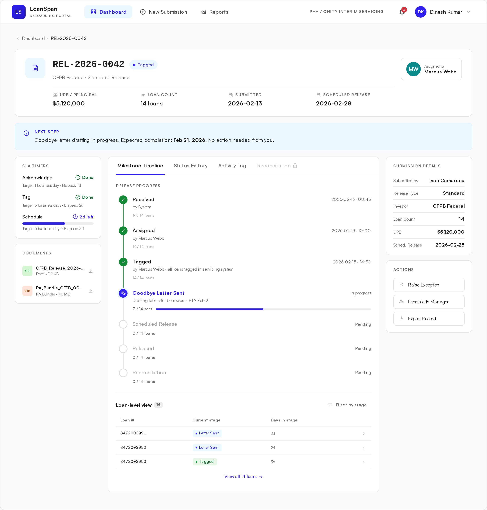

Clients on the platform prepare release packages in their own way — different LOS systems, different report formats, different investor mixes. The receiving team absorbs that variation as exceptions and side conversations. There's no shared structure for validation, ownership, or reconciliation.
A portal designed to absorb upstream variation and enforce shared structure downstream. Submissions are validated at the door, exceptions move through a defined lane with audit trail, and reconciliation is stitched to the release record — informed by deep research with three representative client orgs.

"Submission is better. Tracking is still the problem."Patrick H. — Client Operations, Mortgage Servicing Partner
A submission and tracking portal for loan deboarding — secure upload, live milestones, structured exception handling, and reconciliation, all in one place.
Clients send release packages by email and then go silent for days. Errors surface late, status lives in scattered threads, and accounting can't tell what funds belong to what.
Mortgage clients submitting interim servicing releases — release analysts, client operations leads, and accounting teams handling post-release reconciliation.
A new module inside an existing client portal — a secure submission and pipeline workspace replacing today's email + Excel workflow.
Details, such as names, workflows, and interfaces, have been modified to maintain confidentiality.
Clients on the platform have each invested in their own internal preparation tools, so submissions land in different shapes from different systems. The receiving team absorbs that variation as exceptions, escalations, and side conversations. The design problem isn't "show me what's happening" — it's "give the workflow a shared structure so many different operational realities can coexist."
Even within the three orgs we interviewed, the patterns varied widely — Encompass plus an Access database for one, a custom LOS report for another, an aggregator matrix for a third. Across the rest of the platform's clients, that variation only widens. There's no shared validation layer, so formatting issues are caught downstream, not at the door.
Formatting kickbacks, MERS updates, missing scheduled dates, and investor approval delays all turn into email threads routed through a single escalation contact. There's no structured exception lane — no SLA, no owner, no audit trail.
After release, manifests, escrow returns, and unfunding adjustments arrive across separate systems. Accounting teams cross-reference by hand because nothing ties post-release activity back to the release record.
"This should work like a workflow or ticketing system. One record per submission, with assignment and history."— Client Ops Lead, Investor Servicing Group
"Email is risky. We want secure upload and a dashboard — not a chain of forwards."— Director of Client Operations, Mortgage Lender
A clear theme surfaced from the synthesis: clients didn't just want notifications, they wanted ownership of the pipeline. They wanted to see where each loan was, who held it, and what — if anything — was blocking it. They wanted email to step back and become a fallback, not the system of record.
Catch formatting issues, missing fields, and duplicates at the moment of submission — not three days later, downstream of the receiving team. The sender should see the error first.
Replace escalation-by-email with a structured exception lane: type, owner, SLA, resolution log. Make exceptions a first-class state, not a side conversation.
Design a release record that takes each client's upstream shape and presents one shared structure downstream — so the receiving team isn't doing manual reconciliation across many different operational realities.
A release record that absorbs how each client prepares its data — different LOS systems, different reports, different investor mixes — and gives the receiving team one shared structure downstream.
Inline validation catches formatting issues at upload. An acceptance receipt creates a release record with ID, owner, and starting status the moment a submission lands.
"Email is risky. We want secure upload and a dashboard — not a chain of forwards." Director of Client Operations — Mortgage Lender
The pipeline surfaces aging records and SLA breaches up top. Each release opens to a live timeline — Received → Tagged → Goodbye letter → Scheduled → Released — with reconciliation stitched to the record.
"Submission is better. Tracking is still the problem." Patrick H. — Client Operations, Mortgage Servicing Partner
The portal is in early build, scoped down to a focused MVP: secure submission + reliable status tracking. To pressure-test the design before development, I ran prototype walkthroughs with release analysts and client operations leads from three client organizations. The signal was strong.
Every interviewee located a tracked release on the dashboard within seconds — no instructions needed.
In the prototype, every formatting error was caught and corrected during submission instead of post-send.
All three client groups confirmed that secure submission + pipeline status would replace their current spreadsheet-and-email workflow.
Once the MVP is live, I'll watch for three signals to confirm the portal is doing its job — and to surface where phase two should focus.
I'll track the volume of "did you get it?" and "where are we?" emails. A drop signals clients trust the portal as the source of truth.
I'll measure how many formatting issues get flagged during upload vs. downstream. Higher catch-rate means less rework and fewer kickbacks.
I'll track how long it takes accounting to close out a release after funds move. A shorter cycle confirms the reconciliation snapshot is doing its job.